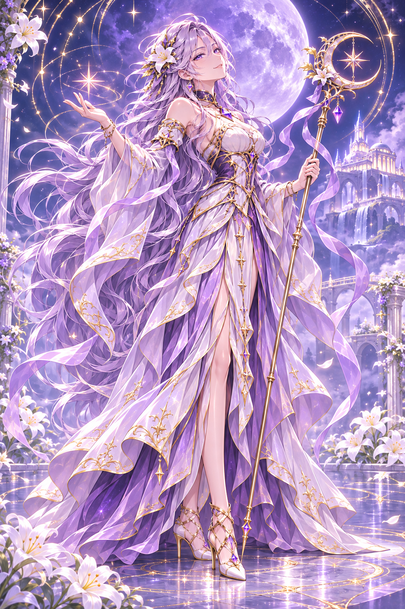
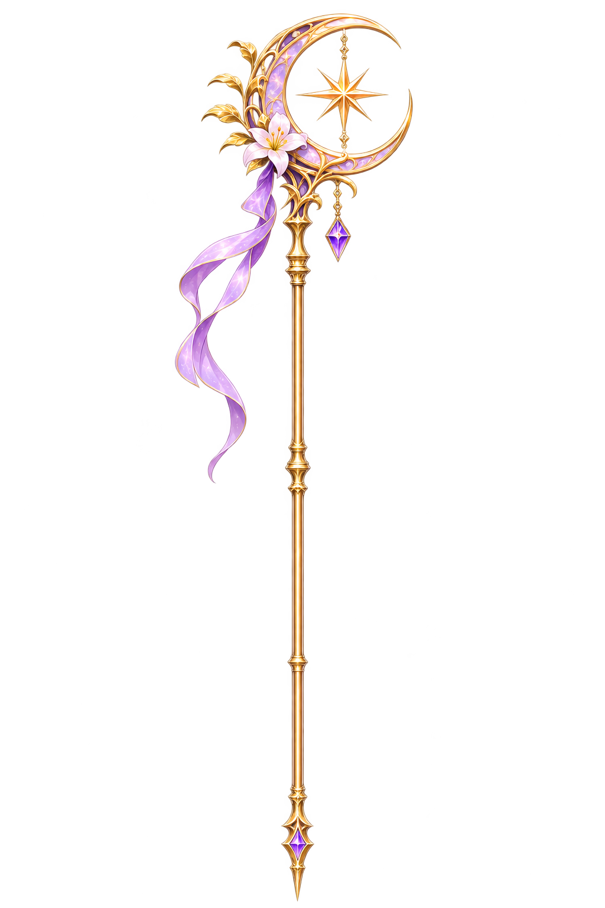
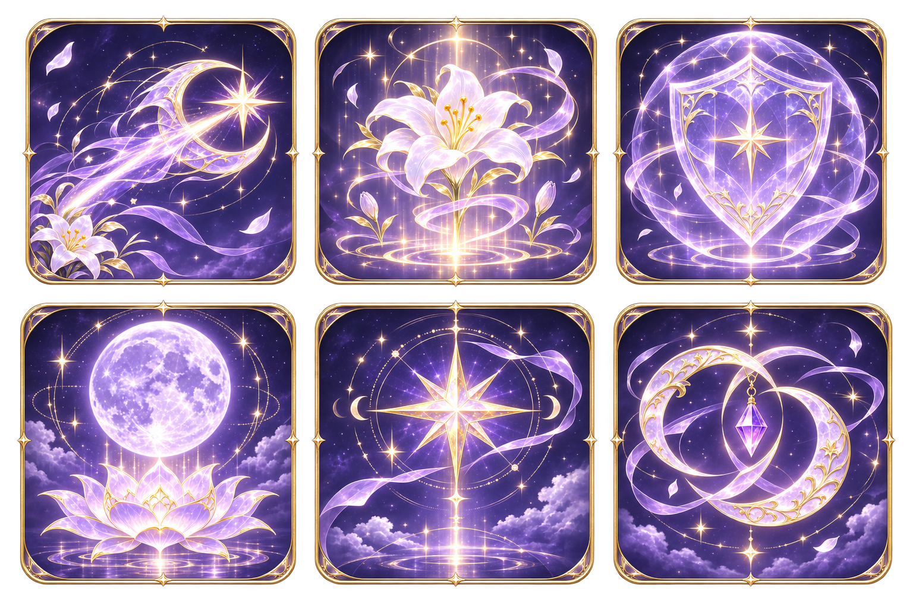

Selena · Character Art CollectionATERNAL SENIA · CHARACTER ART BENCHMARKSelena
Ánh trăng, hoa lily và những vì sao. Bộ thiết kế nhân vật để xem và tham khảo chất lượng cho các hero tiếp theo.
Thiết kế nguồn và key pose · Chưa tích hợp gameplay.

01 · Tranh chủ đạo
 02 · Bốn góc và chất liệu
02 · Bốn góc và chất liệu
 03 · Nhân vật riêng
03 · Nhân vật riêng
 04 · Sáu biểu cảm
04 · Sáu biểu cảm
 05 · Chibi chiến đấu · 8 key pose
05 · Chibi chiến đấu · 8 key pose

06 · Trượng trăng–sao

07 · Sáu icon kỹ năng